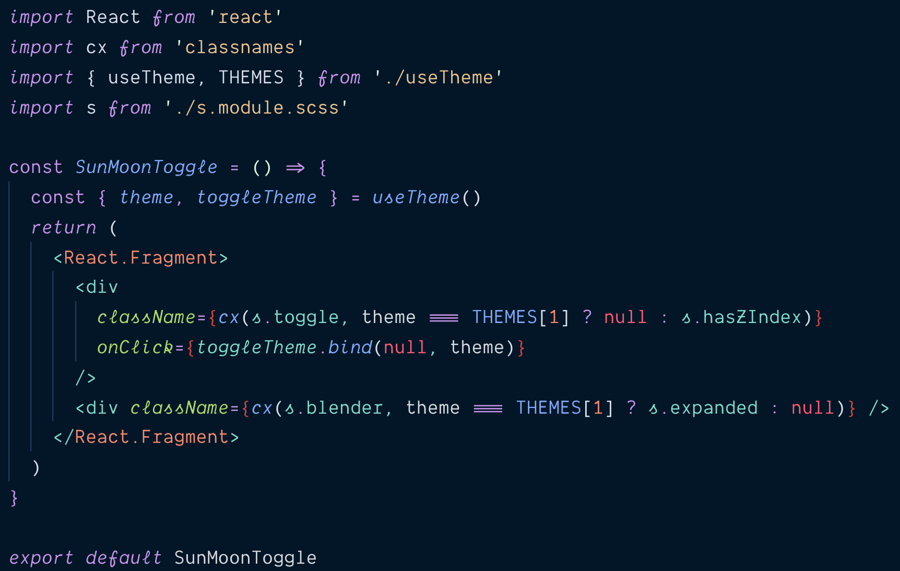

Sun üåöüåù Moon & üî± Hooks
Hi, I'm Wei
@wgao19
Before hooks
Use hooks for the theme toggle
c1154dc
Refactor to custom hook
dfa9330
useTheme.js

c57b894
Recap
üè¢ Toggle coupled with Layout with internal state
üèò Move UI to separate component with hook
üè° Move (again) logic to a
custom hook
üè†üå≥ More declarative UI, logic, and styles
The üåöüåù
Night Mode with Mix Blend Mode: Difference
Friends don't let friends implement dark mode alone
by
Hui Jing
mix-blend-mode: difference
diff(white, white) = ⚪️ - ⚪️ = ⚫️
diff(white, black) = ⚪️ - ⚫️ = ⚪️
cannot üëÄ unsee
Friends don't let friends implement dark mode alone
by
Hui Jing
üåö Toggle üåù
Thank üåöüåù you